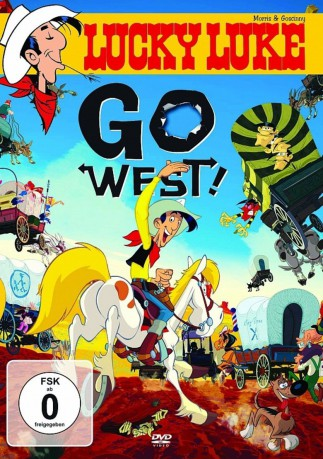

#4198 Auf in den Westen, Lucky Luke!
Alternativ: Go West
 
 IMDB-Wertung: 6.2 / 10
IMDB-Wertung: 6.2 / 10  Metascore: 0
Metascore: 0 
Die Daltons haben Pech gehabt. Wieder mal. Diesmal war nicht nur Lucky Lukes Schatten schneller, sondern auch der ungerührt lässige Cowboy selbst, der den neuesten Raubzug der notorischen Gauner in New York durchkreuzt und das Quartett dingfest macht. Dann wendet sich eine Gruppe von Siedlern an Lucky Luke: Er soll sie als Retter in der Not einmal quer durch Amerika führen, durch Indianergebiet, zu einem Stück Land an er Westküste, das ihnen von dem undurchschaubaren Grundbesitzer Crook versprochen wurde. Der Haken: Ihnen bleiben nur 80 Tage, sonst verfallen alle Rechte. Lucky Luke hat keine Minute zu verlieren und bricht sofort mit den Siedlern auf, die Daltons immer im Schlepptau. Er weiß nicht, dass Crook alles unternehmen wird, dass der Trek niemals ankommen wird – und dass die Daltons die Beute aus ihrem Raubzug in einem Wagen der Siedler versteckt haben. Es gibt viel zu tun, Lucky Luke packt es an...
Jahr: 2007
Dauer: 86 Minuten
FSK:
Land: Frankreich Studio: Ascot Elite Home EntertainmentTonspuren:
Untertitel: Deutsch,
Auflösung: 1080p (1920x1040) Größe: 2949 MB
Genre: Animation/Trick, Abenteuer, Komödie, Western
Regisseur: Olivier Jean Marie
Drehbuch: Colin Higgins
Soundtrack:
Darsteller:
 Lambert Wilson als Lucky Luke
Lambert Wilson als Lucky Luke Clovis Cornillac als Joe Dalton
Clovis Cornillac als Joe Dalton François Morel als Rantanplan
François Morel als Rantanplan Michael Lonsdale als Bartleby
Michael Lonsdale als Bartleby- Titoff als Monsieur Pierre
- Dee Dee Bridgewater als Molly
 Bernard Alane als Averell Dalton
Bernard Alane als Averell Dalton- Edgar Givry als Crook
- Jean Piat als Spike Goodfellow
- Eric Métayer als Piotr / Tang
- Adrien Antoine als Jolly Jumper
- Marie Vincent als Louise de Paname
- Dorothée Pousséo als Miss Littletown
- François Siener als Ugly Barrow
Datei: X:\Kinder Collections\Lucky Luke\Auf in den Westen, Lucky Luke! (2007, FSK, 1920x1040).mkv seit 29.07.2016
Festplatte: Kinder-Filme+Trick
 Alle Filme aus Gruppe 'Kinder Collections\Lucky Luke'
Alle Filme aus Gruppe 'Kinder Collections\Lucky Luke'